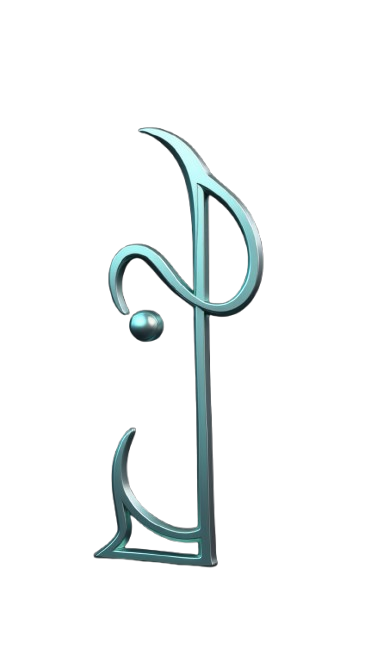

Comunicar sistemas digitais de forma clara, ética e estética — unindo governança (Lex), interação (IO) e estrutura semântica (Graph) sob a assinatura Lex Quantum. Nosso propósito é traduzir complexidade em linguagem visual acessível e operável, fortalecendo confiança, interoperabilidade e entendimento compartilhado.
A Lexiograph é mais do que uma marca — é uma linguagem. Uma gramática visual que emerge da interseção entre compliance digital, interação sistêmica e estruturação do conhecimento.
Ao decompor Lexiograph = Lex + IO + Graph, revelamos uma arquitetura semiótica que traduz sistemas digitais em signos, fluxos e grafos.
Governança digital, compliance, ética algorítmica.
Interação, fluxo de dados, input/output.
Grafia, grafos de conhecimento, estrutura semântica.
A assinatura Lex Quantum integra rigor técnico e estética semiótica. Oferecemos soluções que interpretam, codificam e comunicam sistemas complexos com clareza, interoperabilidade e profundidade simbólica.
A Lexiograph nasce dentro do ecossistema Hubstry Deep Tech — holding mista operacional que reúne, sob um roadmap de 30 anos, ventures em deep tech, pesquisa independente, compliance digital, linguística computacional e infraestrutura de conhecimento.
No ecossistema Hubstry, cada venture ocupa uma posição funcional precisa. A Lexiograph ocupa a camada semiótica e comunicacional: é o braço de design full service que traduz a complexidade técnica e conceitual das demais ventures em linguagem visual operável — grafos, sistemas de identidade, documentação viva, narrativas executivas e interfaces de governança.
Enquanto a Hubstry Deep Tech define arquitetura e estratégia de longo prazo, a Lexiograph entrega a gramática que torna esse ecossistema legível — para clientes, parceiros, investidores e reguladores.
A Lexiograph não é apenas um estúdio de design. É a interface semiótica do ecossistema Hubstry — o lugar onde a profundidade técnica ganha forma, circulação e inteligibilidade.